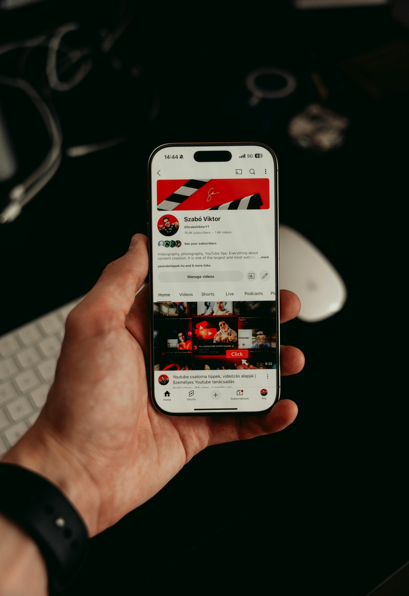

Website

WordPress
把內容管理與後續更新交回品牌自己手上。
文章、案例、服務頁與最新消息，都能用更清楚的後台流程持續維護。
App
需要延伸功能時，再把 Web 接到行動體驗。
展示頁、會員、預約或流程延伸需求，都能從網站再往 App 端接出去。
SEO
讓網站不只上線，也能持續累積搜尋曝光。
從關鍵字、內容架構到成效追蹤，把自然流量成長放進固定優化流程裡。
Cloud hosting
把上線、備份、監控與維運也一起接住。
從部署到穩定性維護，都放在同一套服務裡，減少網站上線後的零碎交接。Service journey
合作流程分成四步，讓 5 項服務能一起推進。
W網站WPWordPress
01 需求盤點確認網站、WordPress、App、SEO、主機需求與優先順序。C內容SSEO
02 內容與設計版型、內容架構與搜尋關鍵字同步整理。
AAppCCloud
03 開發與部署網站、WordPress、App 頁面與主機環境一起配置。
M維運SSEO
04 優化與維運上線後持續追蹤 SEO、速度、穩定性與內容更新。
W網站C轉換
企業網站建置適合需要品牌官網、服務介紹、聯絡表單與基礎轉換流程的企業。
WPWordPressSSEO
WordPress / SEO 成長適合需要可自行更新內容、文章經營與搜尋曝光優化的品牌。What we build
最後用 3 個方向，快速對照適合你的服務。
W網站WPWordPress
網站與 WordPress企業官網、品牌頁、內容後台與版型系統建置。AAppUI前端
App 規劃與前端活動頁、服務展示頁、App 介面敘事與功能入口設計。SSEOCCloud
SEO / 雲端主機搜尋結構優化、速度調校、主機部署與後續維運。